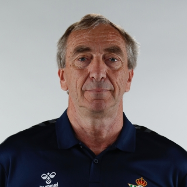
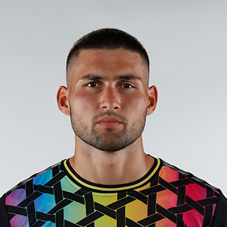
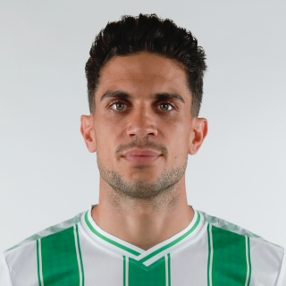
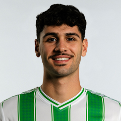
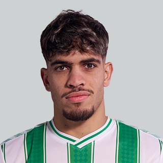
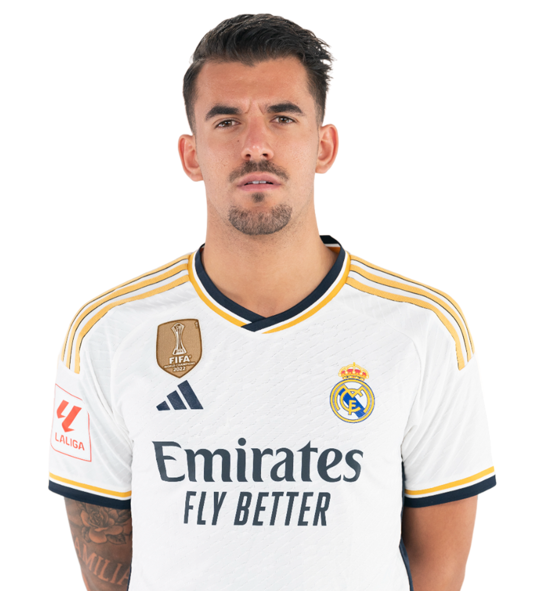

Entrenadores
Manuel Pellegrini
Nombre completo: Manuel Luis Pellegrini Ripamonti
Nacionalidad: Chilena
Cargo: Primer entrenador
Rubén Cousillas

Nombre completo: Rubén Osvaldo Cousillas Fute
Nacionalidad: Argentina
Cargo: Segundo entrenador
Plantilla
Porteros
13. Fran Vieites

Nombre completo: Francisco Barbosa Vieites
Nacionalidad: Española
Posición: Portero
Defensas
19. Héctor Bellerín

Nombre completo: Héctor Bellerín Moruno
Nacionalidad: Española
Posición: Lateral derecho
5. Marc Bartra

Nombre completo: Marc Bartra Aregall
Ncionalidad: Española
Posición: Central
Centrocampistas
4. Johnny Cardoso

Nombre completo: Joao Lucas de Souza Cardoso
Nacionalidad: Estadounidense
Posición: Pivote defensivo
18.Fornals
Nombre completo: Pablo Fornals Malla
Nacionalidad: Española
Posición: Interior derecho
22. Isco
Nombre completo: Francisco Román Alarcón Suárez
Nacionalidad: Española
Posición: Mediapunta
17. Rodri
Nombre completo: Rodrigo Sánchez Rodríguez
Nacionalidad: Española
Posición: Mediapunta
Delanteros
7. Ez Abde

Nombre completo: Abdessamad Ezzalzouli
Nacionalidad: Marroquí
Posición: Extremo izquierdo
10. Ayoze
Nombre completo: Ayoze Pérez Gutiérrez
Nacionalidad: Española
Posición: Delantero
Porteros
Claudio Bravo-Retirado
Defensas
Sokratis-Retirado
Chadi Riad-Crystal Palace (Inglaterra)
Abner Vinicius-Olympique Lyon (Francia)
Centrocampistas
Guido Rodríguez-Fin contrato
Defensas
Alex Moreno
Nombre completo: Alex Moreno
Nacionalidad: Española
Posición: Lateral Izquierdo
Centrocampistas
Dani Ceballos

Nombre completo: Dani Ceballos
Nacionalidad: Española
Posición: Mediocentro